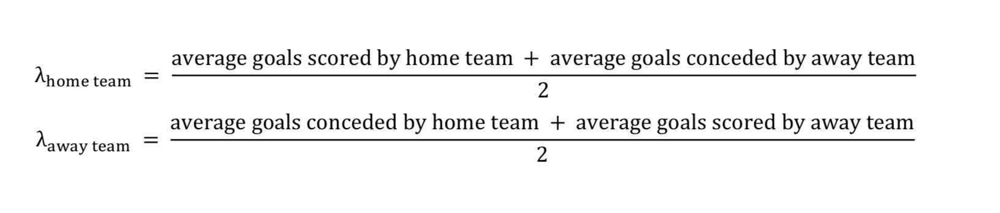

This article will be going into detail about the methods I used to build my prediction model for NHL games. You can find my daily predictions for each game posted on my twitter bot.
There have many attempts to predict the winners of NHL games with perhaps the most notable being those used by Dom Luszczyszyn, Emmanuel Perry , and Micah Blake McCurdy. This model attempts to follow in their footsteps of NHL game prediction although using somewhat simpler methods.
As Harry Shomer noted in his attempt at a prediction model Josh Weissbock's work states that predicting hockey games has a theoretical limit of around 62% accuracy because of the inherit randomness in the sport. So that will be the standard against which I'll be measuring my model's results against for the most part.
My model will attempt to predict NHL win probabilites for each home team by using each team's poisson distribution of goals for and against and then simulating which team will score more with monte carlo sampling/simulation. Basically with my model I draw a 10,000 sample weighted random numbers using the Poisson distribution for each team and then go through these samples and see if the home team has more goals than the away. If so I mark it down as a one, and at the end average the one's and zero's to get a win probability. I then repeat this process another 10,000 times and average all the win probabilities to get a final win probability for the home team.
If you are familiar with statistics you may have heard of the normal, or Gaussian, distribution which one uses to calculate the probability of an event happening. The Poisson is just another type of distribution that is used in particular situations to do the same thing.
The Poisson distribution
is a discrete probability distribution that expresses the probability of a number of given events occuring in a fixed interval of time or space if these events occur with a known constant rate and independently of the time since the last event. (Wikipedia)
To boil this down into regular terms basically what one asks of the Poisson distribution is, "If I know the average amount of something happening in a given time frame what is the probability of x amount of these things happening in the same time frame?" Or to frame this as a hockey question, "If I know the average amount of goals scored in a game what is the probability of two goals being scored in a game?"
The Poisson Distribution also has other requirements to be used to model results though, as the "events need to be rare, random, and memoryless"(Ryder pg.3). As Alan Ryder showed in his Poisson Tooblox paper referenced above scoring in hockey fits all three of these requirements which makes the Poisson distribution acceptable for modeling hockey scoring.
In order to create the Poisson distribution for each team in the game to be predicted we need to calculate a lambda, or expected value. To calculate our lambda for each team I used this method:  As detailed by JIŘÍ LAHVIČKA in his article "In Using Monte Carlo Methods to Predict Premier League Matches." I have furthered modified these lambdas by factoring in the advantage of home teams using Alan Ryder's method of multiplying the home team lambda by 1.05 and dividing the away by 1.05 due to the fact that the home team wins approximately 55% of the games based on that alone (Ryder p.29). In addition I calculated seperate lambdas for goals scored in a regulation and goals scored in OT.
In order to get a sample in which I determine my lambda for each team's Poisson Distribution I simply pull the last 82 games of a team's history not including playoffs or preseason and just average the goals for and the goals against. I do the same for OT, but instead of doing a goals per 60 minutes average like regulation I do a goals per 5 minutes by dividing goals by seconds played in OT and then multiplying the result by 300. As the simulation progresses through the season it will add in the most recent game played while dropping the oldest game. So in a sense the model(or distribution to be more accurate) learns as the season progresses and adjusts lambda accordingly.
Now that the lambadas are determined for each teams goals for distribution its time to start predicting which team will win. I do that by using Monte Carlo methods which is bascially just picking random numbers out of a hat a lot of times and due to the Law of Large Numbers the experiment will converge to the actual expected probability. I think the whole process can be better understood by looking at the code
#Here we draw a 10000 sample from the poisson distributions for home and away
#teams using the lambdas calculated earlier for regulation goals scored
home_reg_goals = np.random.poisson(home_lambda, 10000)
away_reg_goals = np.random.poisson(away_lambda, 10000)
#now I looop through both results and compare them. If the home team goals are
#larger than the away then then I append a one else a zero. If they are tied
#then it goes to an OT and if needed Shootout scenario that are binomial
#distributions decided by home OT and Shootout probability determined by a
#Bradley-Terry Model
for home, away in zip(home_reg_goals, away_reg_goals):
if home > away:
results.append(1)
elif away > home:
results.append(0)
else:
prob_of_zero_goals = (math.exp(-home_ot_lambda) * math.exp(-away_ot_lambda))
if np.random.binomial(1, prob_of_zero_goals) == 1:
try:
prob_of_home_so_win = home_so_win_percent/(home_so_win_percent + away_so_win_percent)
except:
prob_of_home_so_win = .5
results.append(np.random.binomial(1, prob_of_home_so_win))
else:
try:
prob_of_home_ot_win = home_ot_win_percent/(home_ot_win_percent + away_ot_win_percent)
except:
prob_of_home_ot_win = .5
results.append(np.random.binomial(1, prob_of_home_ot_win))
That looks like a lot but lets break it down piece by piece:
#Here we draw a 10000 sample from the poisson distributions for home and away
#teams using the lambdas calculated earlier for regulation goals scored
home_reg_goals = np.random.poisson(home_lambda, 10000)
away_reg_goals = np.random.poisson(away_lambda, 10000)
This part is where draw my random numbers out of a hat. The hat is the poisson distribution of goals per regulation for each team created by the lambda we calculated above. I do this a 10,000 times for each team and the results of these two lines of code are arrays 10,000 entries long of how many goals each team will score in a regulation game interval if they were playing against the other team. The next part of the code is where I start determining winners and losers over our theoretical 10,000 game span.
for home, away in zip(home_reg_goals, away_reg_goals):
if home > away:
results.append(1)
elif away > home:
results.append(0)
This part of the code moves through our 10,000 game sample and simply compares if one total is larger or not. If the home team has more goals it gets a 1, else a 0. But the tricky thing is that teams can tie and go to overtime which is what the next section covers.
else:
prob_of_zero_goals = (math.exp(-home_ot_lambda) * math.exp(-away_ot_lambda))
if np.random.binomial(1, prob_of_zero_goals) == 1:
try:
prob_of_home_so_win = home_so_win_percent/(home_so_win_percent + away_so_win_percent)
except:
prob_of_home_so_win = .5
results.append(np.random.binomial(1, prob_of_home_so_win))
else:
try:
prob_of_home_ot_win = home_ot_win_percent/(home_ot_win_percent + away_ot_win_percent)
except:
prob_of_home_ot_win = .5
results.append(np.random.binomial(1, prob_of_home_ot_win))
So if the goals are tied at the end of regulation the model needs to determine how to declare a winner.
Again building off the work of Alan Ryder(Ryder p.19), he used a poisson distribution to determine the
probability of no goals scored in OT. That is what the code
prob_of_zero_goals = (math.exp(-home_ot_lambda) * math.exp(-away_ot_lambda))
does. Once that
is determined then determing whether a game is determined in OT or goes to the Shootout is a simple Bernoulli trial,
or coin flip. If the flip comes up one then the game goes to shootout, if zero then it was determined in overtime.
So once OT or shootout is deteremined the model uses the same method to get a probability of the home team winning either one of those scenarios. It uses the Bradley-Terry model to calculate the probability of a home win by comparing the win percentages of both teams in the shootout and overtime portions of the game. Once the probability of a home win is computed for either scenario then it is just another Bernoulli trial for both and if the home team wins a one is recorded and a loss is a zero. One last note on the code; the try and except blocks are for the off chance that both teams had finished every single game in regulation in their last 82 games. Highly improbably but also possible, and if true I just assigned the home team an even coin flip chance at winning.
Then the model averages the ones and zeros to get a win probability for the home team. Once this process is done I repeat it for another 9,999 times to get a win probability distribution and take the mean of that distribution to get a final win probability for the home team. These distributions are seen in the tweet seen below:
Vancouver Canucks @ Edmonton Oilers 2018-09-25:
— Barlowe Analytics (@barloweanalytic) September 25, 2018
Edmonton Oilers: 58.9%
Vancouver Canucks: 41.1% pic.twitter.com/HEUJqQfApD
Now I guess the part everyone really cares about: Is the Model any good? It doing runs on the 2018 season the model performed with a .675 logloss and a .585 accuracy. These results are good, but not great. It's definitely better than just choosing the home team to win, but still lags behind other public models out there. And I myself believe the methods can be greatly improved upon as well.
The first step would to be use something other than goals as the metric on which predictions are based. It's commonly known that past goals aren't the best statistic to predict future goals scored. This statistic was chosen for convienience more than anything, but given these drawbacks the model still performed reasonably well. The next move would be to look at things on a player level instead of just a team level. Team rosters change a decent amount between season and even in season due to injuries and trade. The current iteration of this model ignores all that. Being able to include a method of looking at things on a player level I think would help improve this model given the methods it uses. It would also include goalies instead of just looking at a team's goals allowed as whole which I think is another addition that would help make it more accurate
Perhaps the biggest, and arguably quickest, improvement would be to weight more recent events heavier than events further in the past. As of right now all games are weighted equally whether they happened last night or last season. One of the drawbacks of this is that it takes a while before the new season results begin to overtake the old season results not allowing the distribution to learn quickly enough. This is more so a problem in the first half fo the season than the later half, but still would be useful in the later stages of any season to help mirror any slumps in play or possibly changes in a teams true lambda through bad play or injuries.
The last improvement would be a better way of determining overtime and shootout win probabilites other than just using win percentages. I'm not sure how I will go about doing this yet, but I think the method I'm using currently is rather simple and doesn't fully capture the variance/randomness of these events.
In closing I'd like to stress the importance of Alan Ryder's work on using the Poisson distribution to calculate win probabilites. It's an older work done before the shootout existed but most of the work still holds up in modern hockey and I would recommend everyone wanting to study hockey analytics read it.
'Poisson Toolbox' by Alan Ryder
'Comparing Scoring Talent with Empirical Bayes' by Domenic Galamini
'Win Probabilities' by Alan Ryder
'Using Monte Carlo Simulation to Calculate Match Importance' by JIŘÍ LAHVIČKA